GeoWater Lab @ PKU
Publications
Peer-reviewed articles, dissertations, and professional service that reflect our lab’s contributions to global hydrology.
Published Articles
* corresponding author · † GeoWater Lab member
-
Relative Centroid Index (RCI): A novel scale-independent metric for assessing hydrological distributions across hierarchical river networks.
Water Resources Research

-
Hidden complexity in reservoir flow regulation revealed by spectral analysis.
Geophysical Research Letters, 53, e2026GL121654
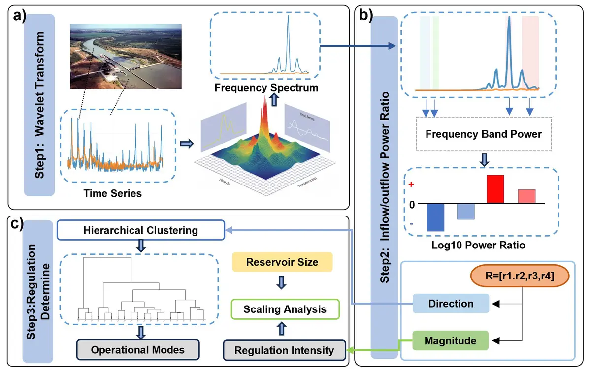
-
Observation-based spatiotemporal analysis of the evolving flood regulation capacity for the Yangtze River Basin.
Geophysical Research Letters, 53(8), e2025GL120255
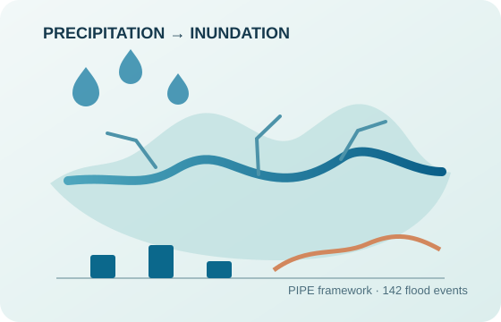
-
Leveraging “SWOT and a-priori information (SWAP)” constrained channel parameters for improved historical river discharge estimates from space.
ISPRS Journal of Photogrammetry and Remote Sensing, 235, 536–550
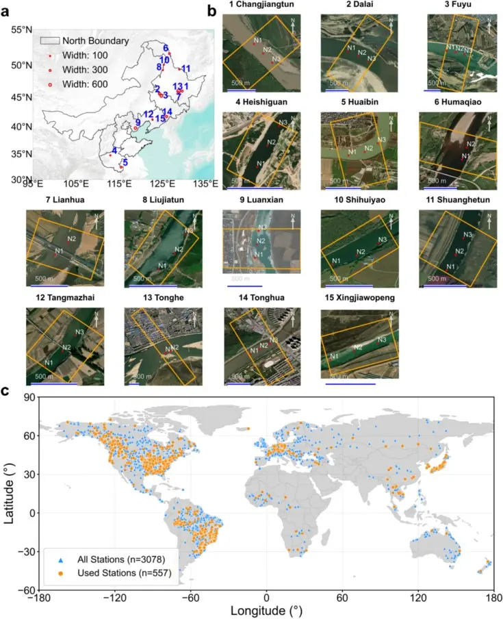
-
Human perturbations reshape hydrological responses in riverine systems: Insights from a reach-level quantification framework to the Pearl River Basin.
Sustainable Horizons, 17, 100174
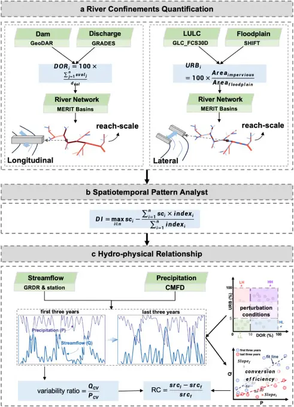
-
Process diagnostics of snowmelt runoff in global hydrological models: Part I – Model evaluation from the perspective of robustness.
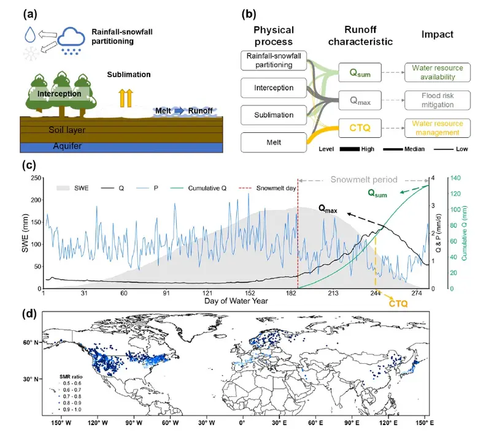
-
Process diagnostics of snowmelt runoff in global hydrological models: Part II – Are more complex models better?
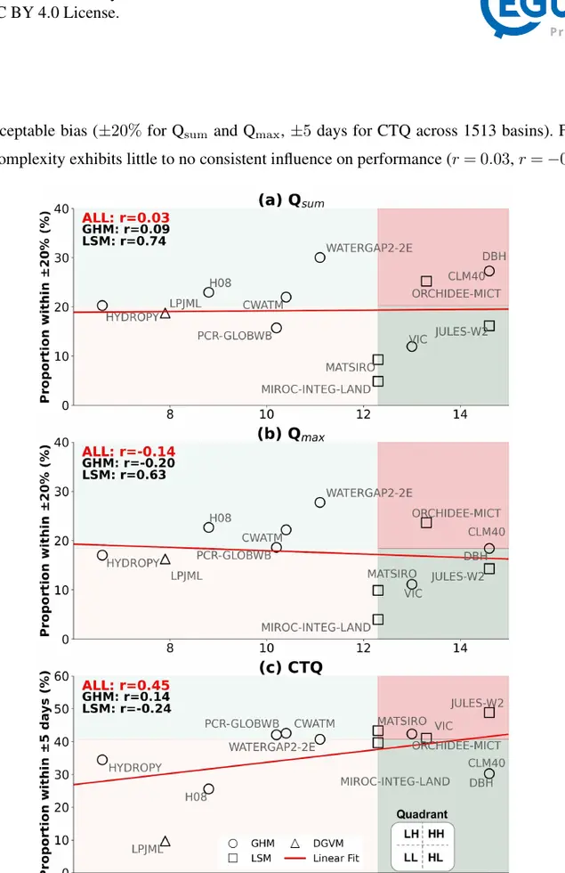
-
Flood regulation as a multivariate challenge in the Anthropocene: a systematic modeling approach.

-
Systematic analyses of meteorological forcing and process parameterization uncertainties in modeling runoff with Noah-MP for the Upper Brahmaputra River Basin.

-
Fusion sensing for urban resilience.
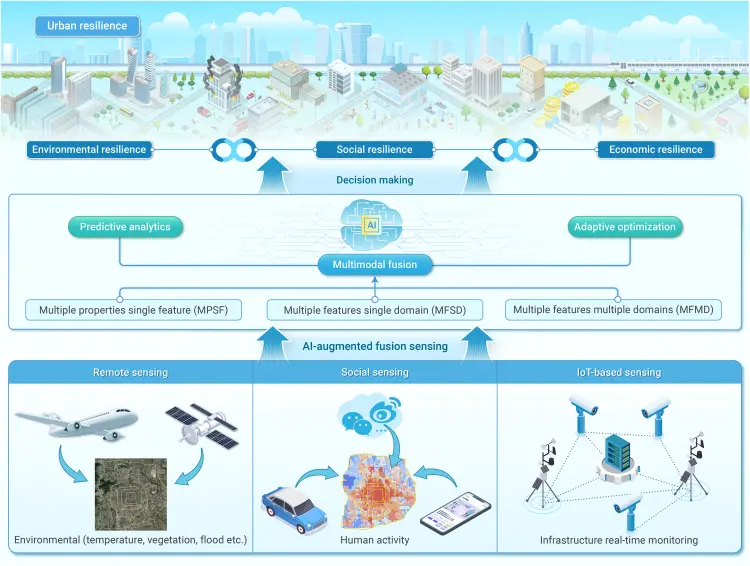
-
Natural fluvial connection across watersheds.
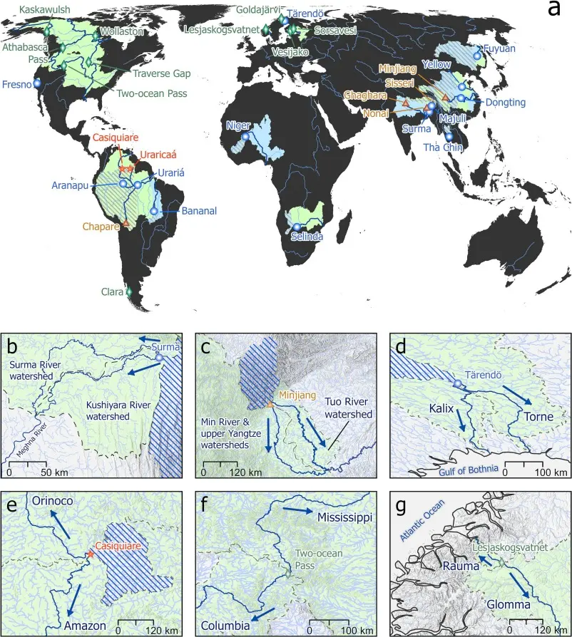
-
The River Experiment Initiative: Advancing Global Surface Water Science for Local Societal Benefits.
As co-leads of the RivEx GEWEX Hydroclimatology Panel initiative, we are establishing a common strategy for comparing river models to inform decision support activities.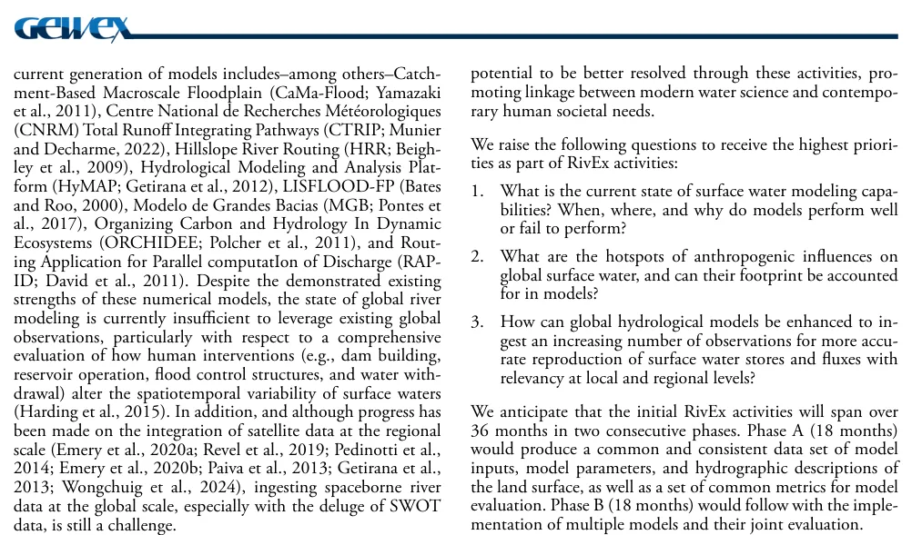
-
Impacts of changes in climate, cryosphere, and vegetation on freshwater supply in the southeastern Tibetan Plateau.

-
Global daily discharge estimation based on grid long short-term memory (LSTM) model and river routing.
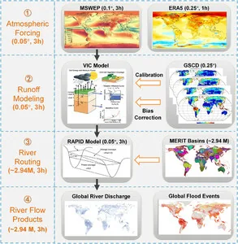
-
Revisiting At-a-Station Hydraulic Geometry using discharge observations and satellite-derived river widths.
Editor’s Highlight
-
SHIFT: A DEM-based Spatial Heterogeneity Improved Mapping of Global Geomorphic Floodplains.
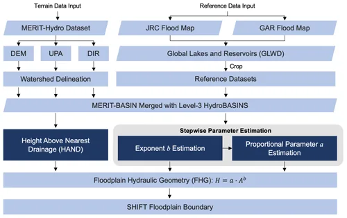
-
A synthesis of global streamflow characteristics, hydrometeorology, catchment attributes (GSHA) for large-sample river-centric studies.
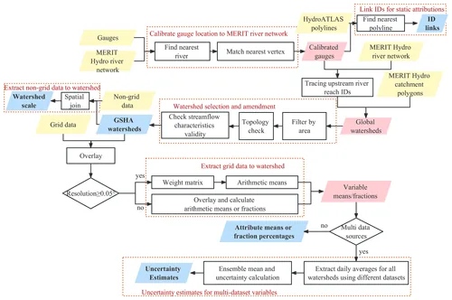
-
Tracking global floodplain urban growth.
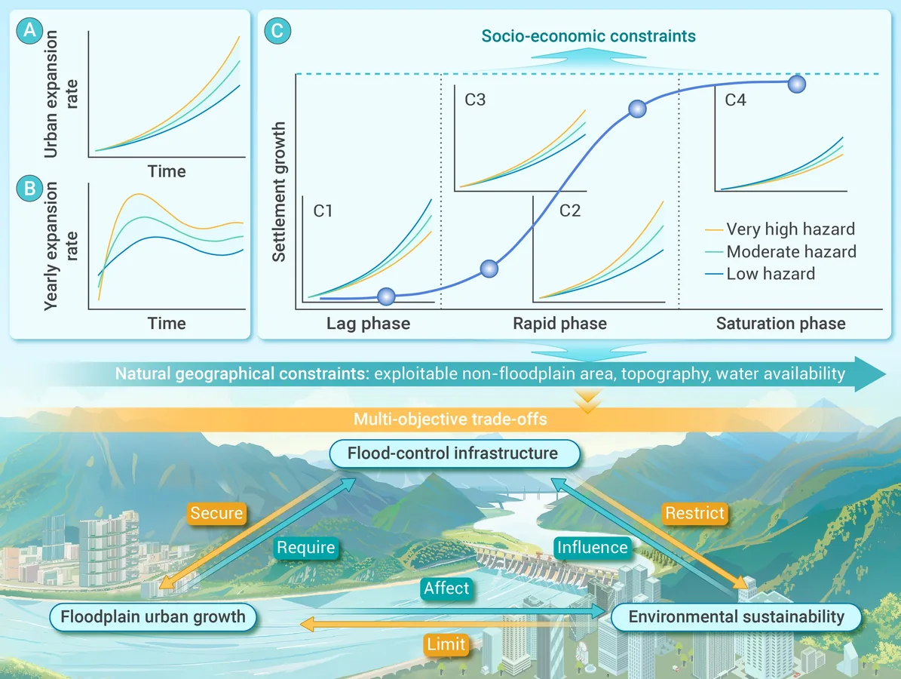
-
Global patterns in river water storage dependent on residence time.
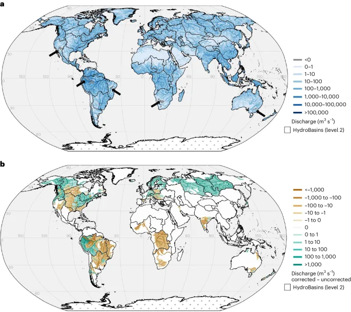
-
Inversion of river discharge from river width: a critical assessment at three thousand gauges.
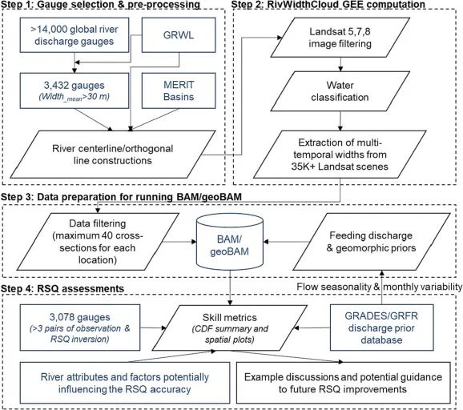
-
Reversal of the levee effect towards sustainable floodplain management.
Featured article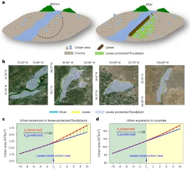
-
A global-scale framework for hydropower development incorporating strict environmental constraints.
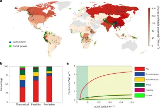
-
Assessment of runoff simulation in the Yarlung Zangbo River Basin based on the multi-physics Noah-MP land surface model.

-
Making China’s water data accessible, usable and shareable.
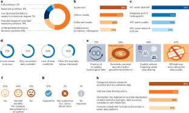
-
A framework for estimating global river discharge from Surface Water and Ocean Topography mission observations.
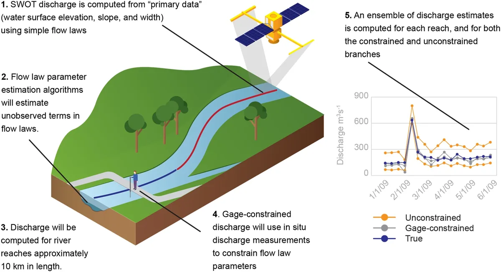
-
The impact of multi-sensor land data assimilation on river discharge estimation.
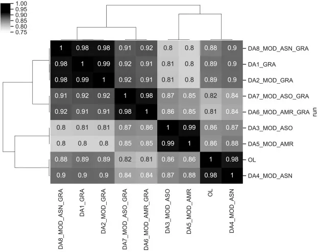
-
Assessing placement bias of the global river gauge network.
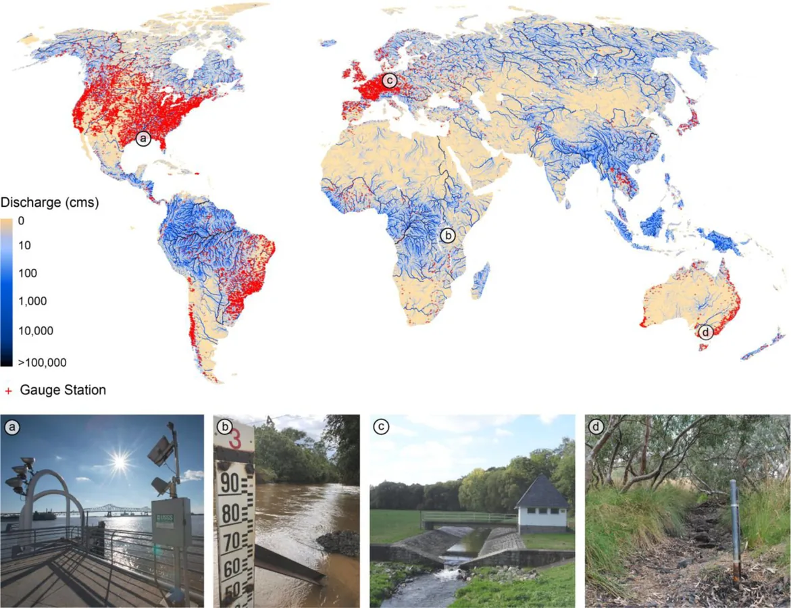
-
The importance of hydrology in routing terrestrial carbon to the atmosphere via global streams and rivers.
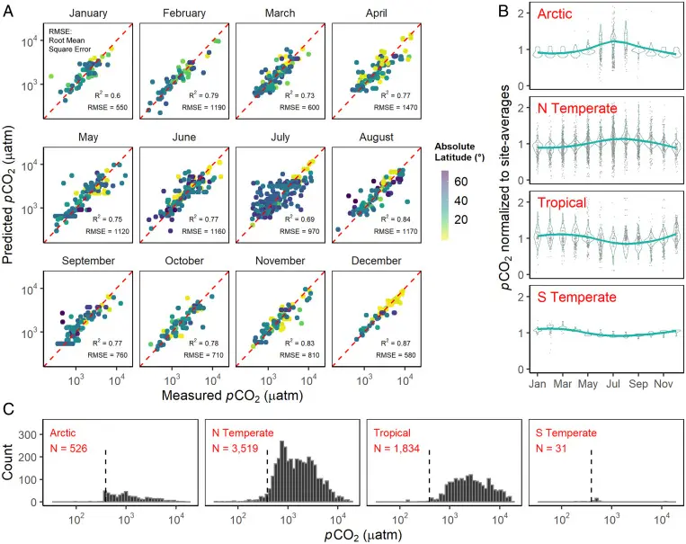
-
RODEO: An algorithm and Google Earth Engine application for river discharge retrieval from Landsat.
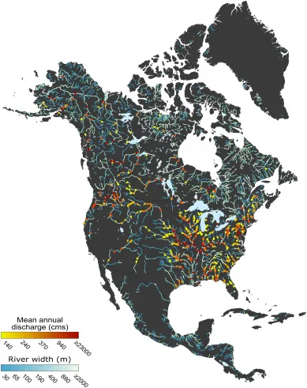
-
A new vector-based global river network dataset accounting for variable drainage density.

-
Recent changes to Arctic river discharge.
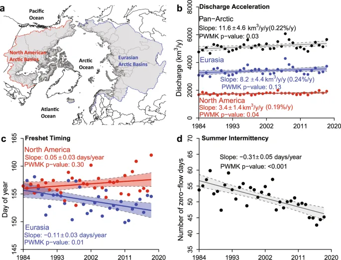
-
Deforestation-induced warming over tropical mountain regions regulated by elevation.

-
Combining optical remote sensing, McFLI discharge estimation, global hydrologic modeling, and data assimilation to improve daily discharge estimates.

-
Reducing solar radiation forcing uncertainty and its impact on surface energy and water fluxes.
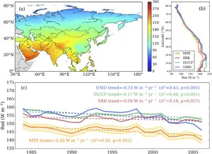
-
Global reach-level 3-hourly river flood reanalysis (1980–2019).

-
Exploring the factors controlling the error structure of SWOT discharge estimates.

-
A vector-based river routing model for Earth System Models: Parallelization and global performance.
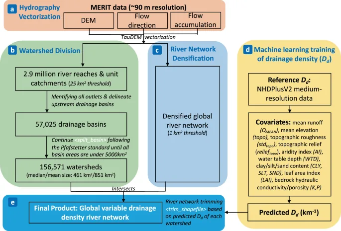
-
Ensemble skill gains obtained from multi-physics versus multi-model approaches for continental-scale hydrologic simulations.

-
Spatiotemporal variability of global river extent and the natural driving factors revealed by decades of Landsat observations, GRACE gravimetry observations, and land surface model simulations.
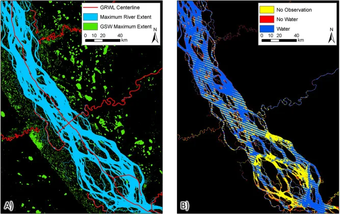
-
Global estimates of reach-level bankfull river width leveraging big-data geospatial analysis.

-
Assimilating multi-satellite snow data in gauged Eurasia improves Asian monsoon seasonal anomaly simulations.

-
Constraining remote river discharge using reach-scale geomorphology.

-
Understanding the re-infiltration processes for simulating streamflow in North Central Texas using the WRF-Hydro Modeling System.
* graduate advisee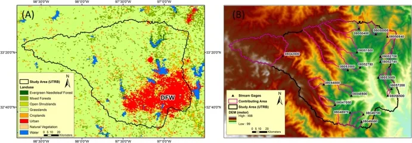
-
Global fully-distributed parameter regionalization based on observed streamflow from 4,229 headwater catchments.
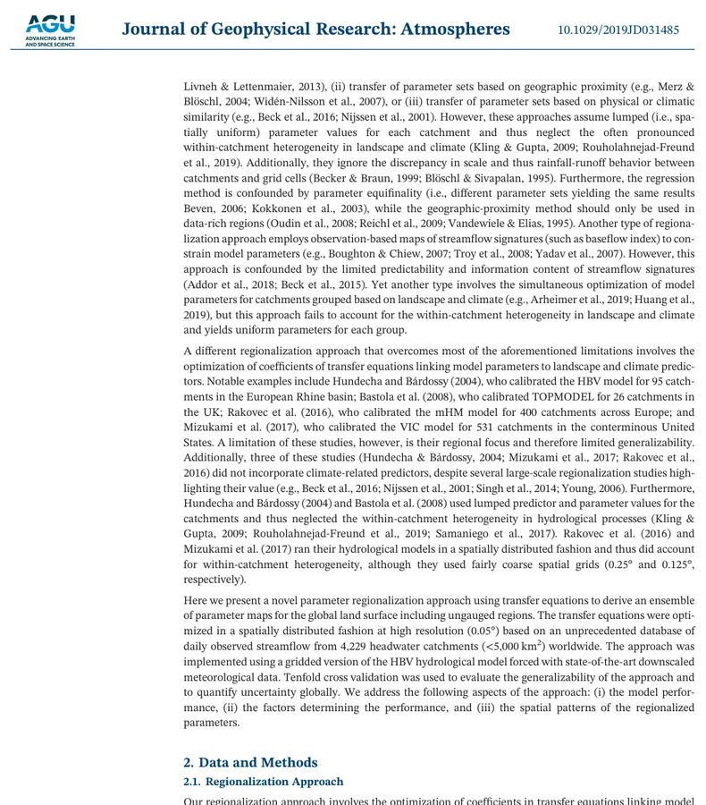
-
Falsification-oriented signature-based evaluation for enhancing land surface models.
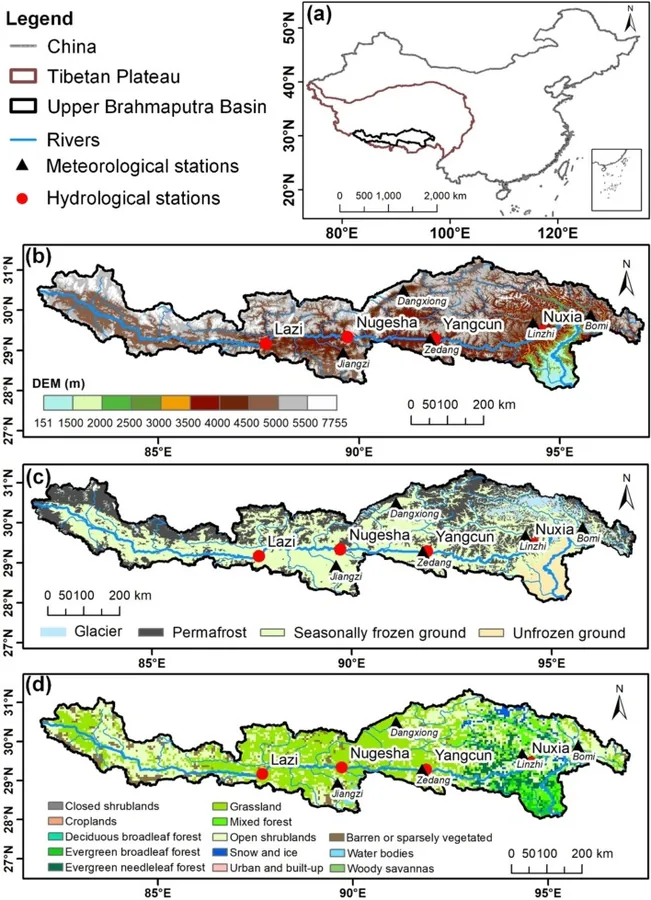
-
Elevation regulates the biophysical climate impacts of mountain deforestation.
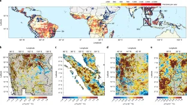
-
Elucidating diverse drought characteristics using SPI and SPEI in China.
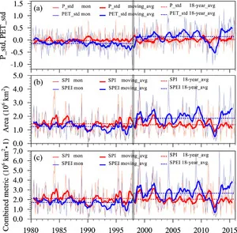
-
High spatiotemporal resolution mapping of global urban change from 1985 to 2015.
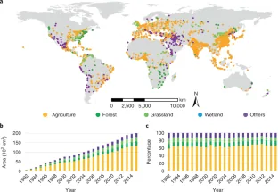
-
Modeling nitrogen dynamics on regional terrestrial carbon and water cycles over China with Noah-MP-CN.

-
Global reconstruction of naturalized river flows at 2.94 million reaches.

-
Enhancing SWOT discharge assimilation through spatiotemporal correlations.
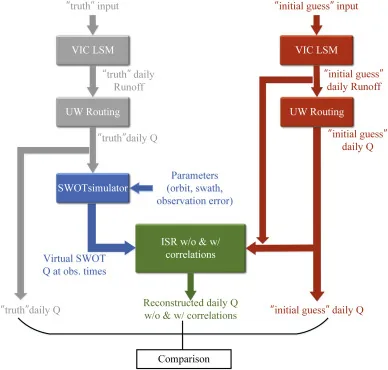
-
Systematic hydrological evaluation of the Noah-MP land surface model over China.

-
On the Sensitivity of the Precipitation Partitioning Into Evapotranspiration and Runoff in Land Surface Parameterizations.

-
Towards actionable flood and climate prediction: understanding and advancing land surface modelling with enriched geospatial information
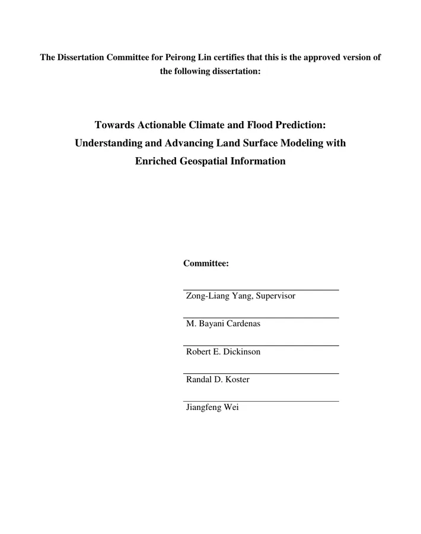
-
Insights into hydrometeorological factors constraining flood prediction skill during major Texas Hill Country floods.
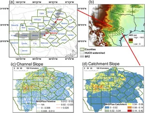
-
Implementation of a vector-based river network routing model in the community WRF-Hydro system for flood discharge simulation.

-
Irrigation-induced environmental changes around the Aral Sea: An integrated view from multiple satellite observations.
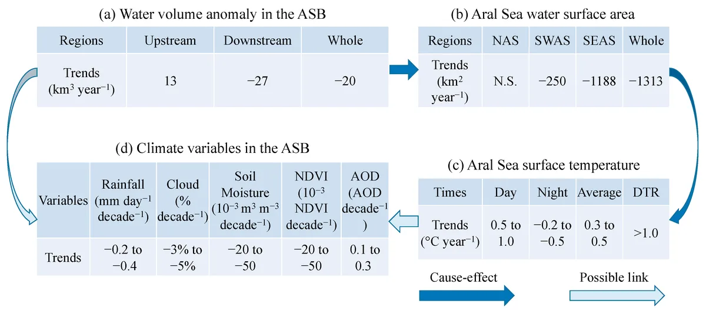
-
Spatio-temporal evaluation of simulated evapotranspiration and streamflow over Texas using the WRF-Hydro-RAPID framework.

-
National Water Center Innovators Program Summer Institute Report.
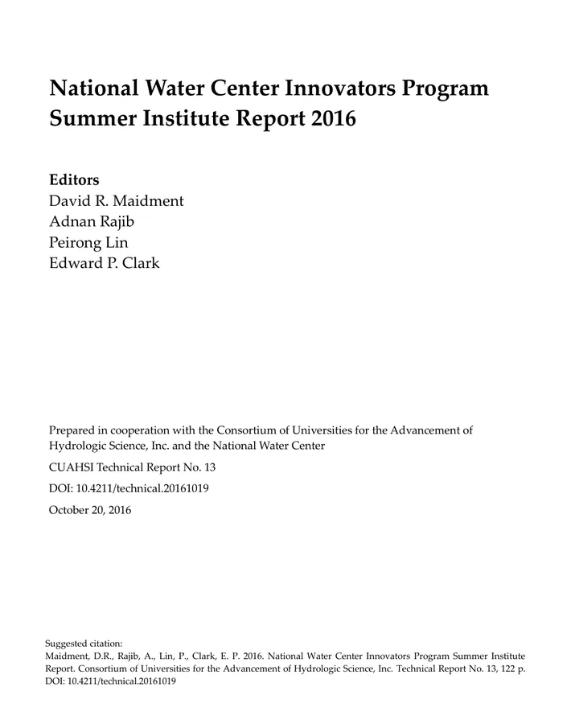
-
Snow data assimilation-constrained land initialization improves seasonal temperature prediction.
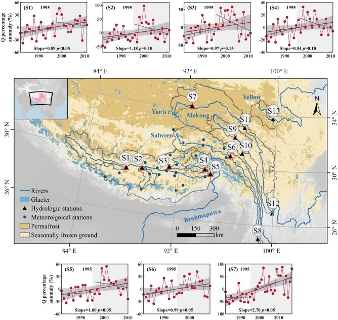
-
Development and evaluation of a physically-based lake level model for water resource management: A case study for Lake Buchanan, Texas.
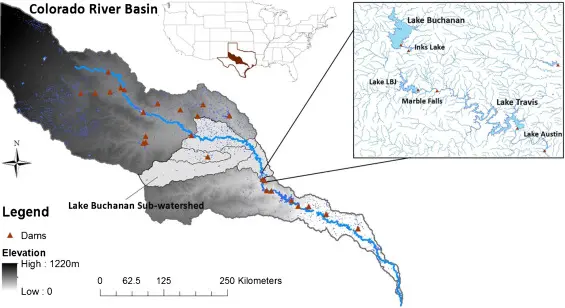
-
Hyperspectral vegetation indices for crop chlorophyll estimation: assessment, modeling and validation.